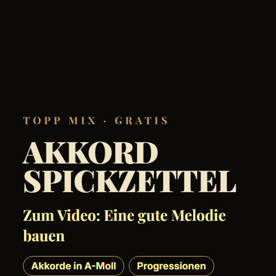

← Alle ExtrasAkkord-Spickzettel
Akkorde in A-Moll, Progressionen für Trap und Drill und die Melodie aus dem Video als MIDI.
Kostenlos herunterladen (0,3 MB)ZIP-Datei, ohne Anmeldung. Am besten am PC öffnen.

Gehört zum Video: Wie baust du eine gute Melodie?
[Videolink folgt]Stichwort im Video: MELODIE · Veröffentlicht: 29. Oktober 2026
Das ist drin
- topp-mix_akkord-spickzettel_link.pdf
- melodie_am-f.mid
Nutzung
Frei nutzbar in deinen eigenen Beats und Songs.
Nicht als Pack oder als einzelne Dateien weiterverkaufen oder weitergeben.
Gut zu wissen
MIDI-Dateien lassen sich am Handy kaum nutzen. Speichere die Datei und öffne sie am PC.